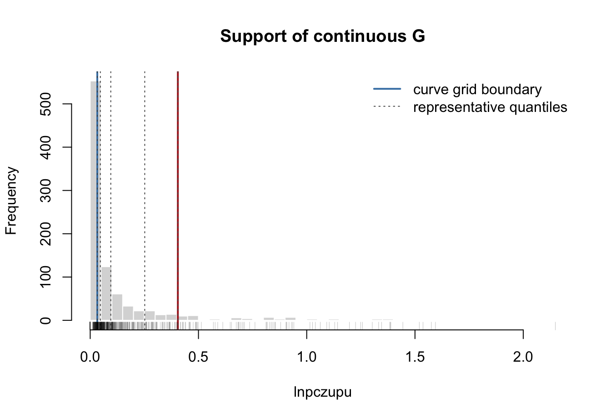
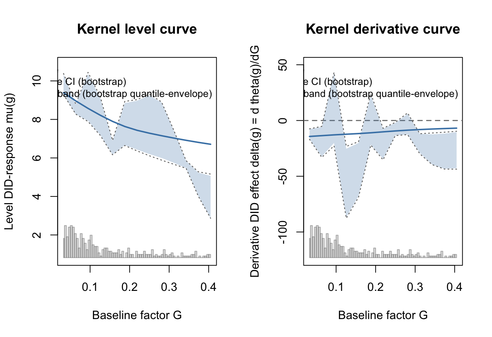
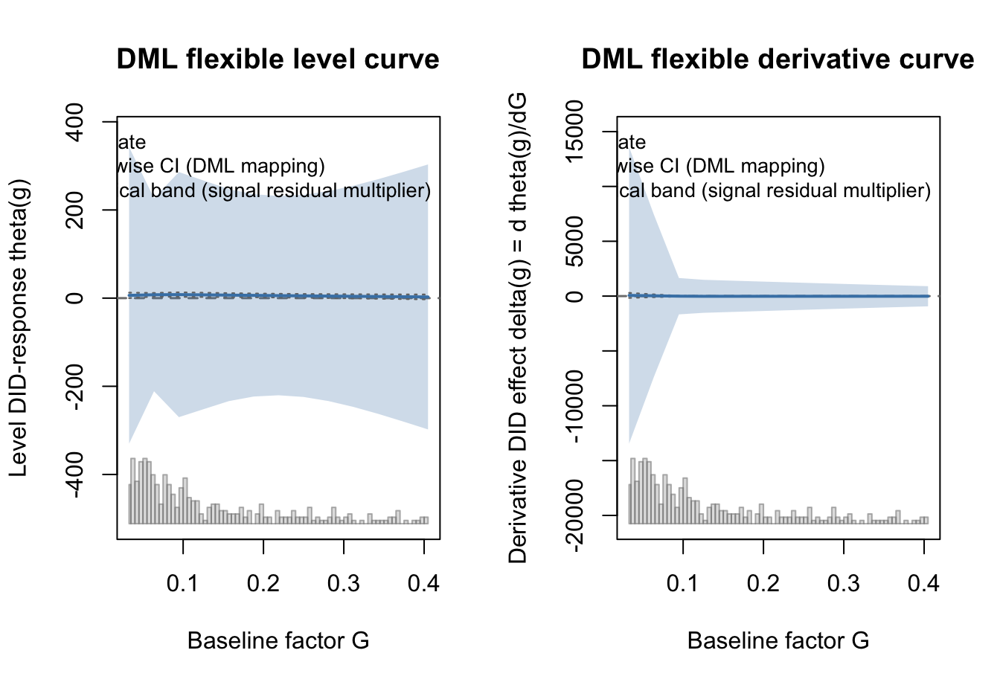
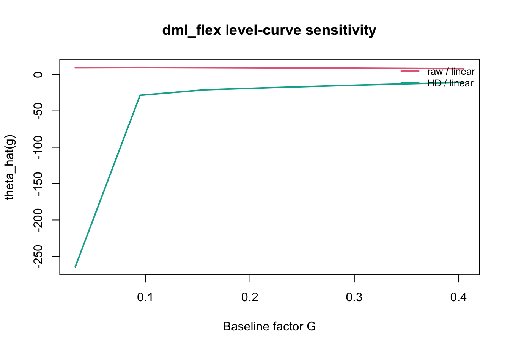
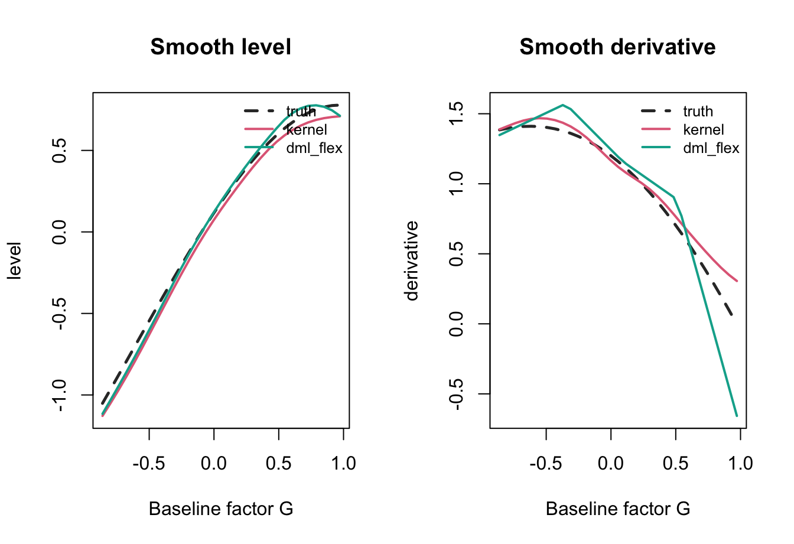
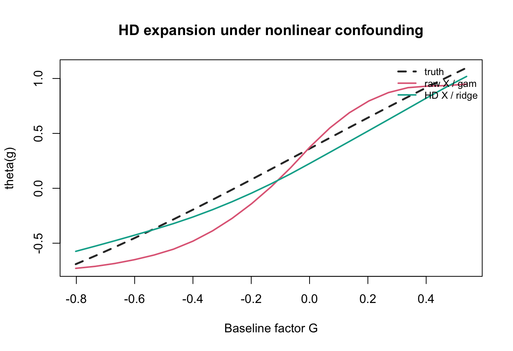
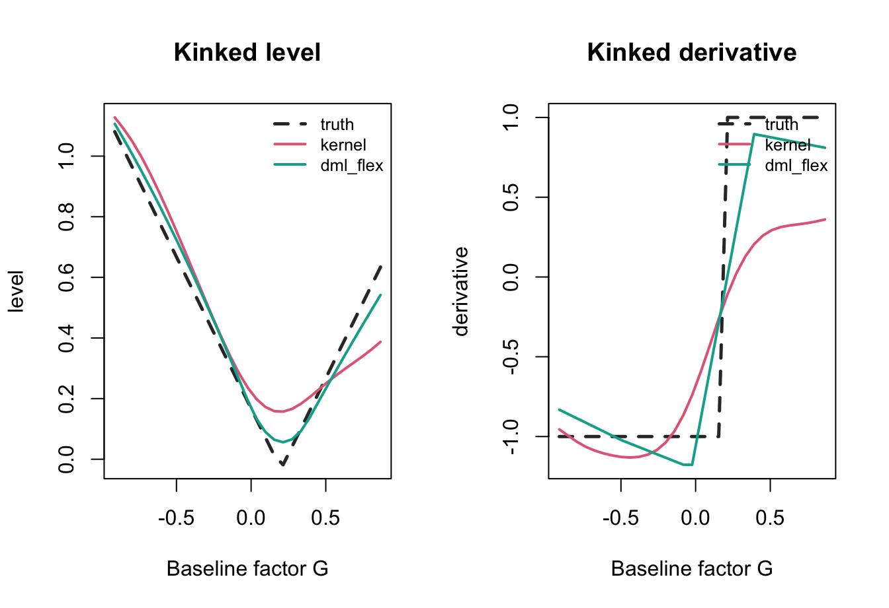

remove.packages("fdid")
devtools::install_local(
"/Users/liuenhan/Desktop/Statsclaw-FDID/fdid-main",
force = TRUE,
upgrade = "never"
)
.rs.restartR()
library(fdid)
packageVersion("fdid")
normalizePath(find.package("fdid"))3 Continuous G
This chapter reorganizes the continuous-treatment workflow around the estimand first. The question is not only “which method should I run?” but “which continuous-\(G\) object do I want to report?”
The chapter uses two tracks:
- A mortality running example, which is compact and interpretable.
- Known-truth synthetic examples, which show what the estimators can and cannot recover under controlled designs.
3.1 Local RStudio Workflow
When rendering from RStudio, make sure RStudio loads the local development package, not an older installed CRAN or GitHub copy.
The expected package path should point inside the local R library that received the install, and the installed source should match /Users/liuenhan/Desktop/Statsclaw-FDID/fdid-main. Then open the tutorial project in RStudio and click Render. From Terminal, RStudio’s bundled Quarto can also render the book:
/Applications/RStudio.app/Contents/Resources/app/quarto/bin/quarto render tutorial3.2 Estimator Map
All continuous-\(G\) methods enter through fdid(..., method = ...).
| User question | Target | Method | Main output | Main caveat |
|---|---|---|---|---|
| Is there one average slope? | linear slope |
"did", "ols1", "ols2"
|
scalar table | misspecifies nonlinear curves |
| Is there one ML-adjusted slope? | partially linear slope | "dml_plr" |
scalar table | PLR target only |
| What is the visual dose-response? | level and derivative curves | "kernel" |
curve plots | weak with high-dimensional confounding |
| What is the nonlinear adjusted curve? |
theta(g) and theta_prime(g)
|
"dml_flex" |
level and derivative plots | derivative is sensitive |
| What is the observed average derivative? | E[partial_g mu(G, X)] |
"dml_incremental" |
scalar table | density-score sensitive |
What if I dichotomize G? |
binary AIPW/IRM effect | "dml_binary" |
scalar table | binary estimand only |
The curve plot API makes the target explicit:
method = "dml_incremental" is scalar. It does not have a curve plot.
3.3 Data Setup And Support
mortality$uniqueid <- paste(as.character(mortality$provid),
as.character(mortality$countyid), sep = "-")
covar <- c("avggrain", "nograin", "urban", "dis_bj", "dis_pc",
"rice", "minority", "edu", "lnpop")
tr_period <- 1958:1961
ref_period <- 1957
s_cont <- fdid_prepare(
data = transform(mortality, G_cont = lnpczupu),
Y_label = "mortality",
X_labels = covar,
G_label = "G_cont",
unit_label = "uniqueid",
time_label = "year"
)The mortality lnpczupu variable has a large mass at zero. The main curve grid therefore uses the interior of the positive support. This is a support choice, not a binning estimator: the estimator still smooths over continuous G.
For method = "kernel" and method = "dml_flex", the eval_g argument is the estimation grid, not only a plotting grid. The package estimates and stores curve quantities at those values. In the rendered tutorial below, eval_g_curve is kept shorter so the examples run quickly; in a substantive analysis, use the default 50-point grid or supply a denser grid over the support you want to report. The separate g_landmarks values are only landmarks for labels and interpretation.
g_positive <- s_cont$G[s_cont$G > 0]
eval_g_main <- seq(
stats::quantile(g_positive, 0.15, na.rm = TRUE),
stats::quantile(g_positive, 0.85, na.rm = TRUE),
length.out = 25
)
eval_g_curve <- eval_g_main[round(seq(1, length(eval_g_main), length.out = 13))]
g_landmarks <- stats::quantile(g_positive, c(0.15, 0.25, 0.50, 0.75, 0.85),
na.rm = TRUE)
support_table <- data.frame(
quantity = c("n units", "share G = 0", "positive-support 15%", "positive-support 85%"),
value = c(nrow(s_cont), mean(s_cont$G == 0), eval_g_main[1],
eval_g_main[length(eval_g_main)])
)
knitr::kable(support_table, digits = 4)| quantity | value |
|---|---|
| n units | 921.0000 |
| share G = 0 | 0.4473 |
| positive-support 15% | 0.0327 |
| positive-support 85% | 0.4049 |
hist(s_cont$G, breaks = 35, col = "gray85", border = "white",
xlab = "lnpczupu", main = "Support of continuous G")
abline(v = range(eval_g_main), col = c("steelblue", "firebrick"), lwd = 2)
abline(v = g_landmarks, col = "gray35", lty = 3)
rug(s_cont$G, col = grDevices::adjustcolor("black", 0.25))
legend("topright",
legend = c("curve grid boundary", "representative quantiles"),
col = c("steelblue", "gray35"), lty = c(1, 3), lwd = c(2, 1),
bty = "n")
The five landmark values are only used for labels and concise interpretation. They are not five treatment bins, and they do not control the curve estimation unless they are explicitly passed as eval_g.
3.4 Scalar Benchmarks On Mortality
These methods answer whether the event-period outcome change has one average relationship with continuous G. They do not settle whether the relationship is nonlinear.
fit_scalar_benchmarks <- list(
did = fit_fdid(s_cont, tr_period = tr_period, ref_period = ref_period,
method = "did"),
ols1 = fit_fdid(s_cont, tr_period = tr_period, ref_period = ref_period,
method = "ols1"),
ols2 = fit_fdid(s_cont, tr_period = tr_period, ref_period = ref_period,
method = "ols2"),
dml_plr = fit_fdid(s_cont, tr_period = tr_period, ref_period = ref_period,
method = "dml_plr", learner = "linear", K = 3, S = 1)
)
scalar_table <- do.call(rbind, list(
event_row(fit_scalar_benchmarks$did, "did", "unadjusted linear slope"),
event_row(fit_scalar_benchmarks$ols1, "ols1", "additive adjusted slope"),
event_row(fit_scalar_benchmarks$ols2, "ols2", "interaction adjusted slope"),
event_row(fit_scalar_benchmarks$dml_plr, "dml_plr", "partially linear DML slope",
learner = "linear")
))
knitr::kable(scalar_table[, c("method", "target", "estimate", "std_error",
"ci_lower", "ci_upper", "note")],
digits = 4)| method | target | estimate | std_error | ci_lower | ci_upper | note |
|---|---|---|---|---|---|---|
| did | unadjusted linear slope | -5.8461 | 0.9664 | -7.7427 | -3.9494 | |
| ols1 | additive adjusted slope | -10.1637 | 1.4352 | -12.9804 | -7.3470 | |
| ols2 | interaction adjusted slope | -5.1507 | 2.6137 | -10.2737 | -0.0278 | |
| dml_plr | partially linear DML slope | -9.9797 | 1.3903 | -12.7045 | -7.2548 |
3.5 Curve Estimators On Mortality
3.5.1 Kernel Level And Derivative Curves
method = "kernel" locally smooths the event-period outcome change around each evaluation point g. It reports a level curve mu_hat(g) and a derivative curve delta_hat(g).
The fitted curve has one row per value in eval_g. plot(type = "curve") draws those stored estimates and their intervals; it does not add new estimation points after the fit.
fit_kernel_main <- fit_fdid(
s_cont,
tr_period = tr_period,
ref_period = ref_period,
method = "kernel",
eval_g = eval_g_curve,
K_folds = 3,
vartype = "bootstrap",
boot = 3
)
if (!is_fit_error(fit_kernel_main)) {
par(mfrow = c(1, 2))
plot(fit_kernel_main, type = "curve", curve = "level",
main = "Kernel level curve")
plot(fit_kernel_main, type = "curve", curve = "derivative",
main = "Kernel derivative curve")
par(mfrow = c(1, 1))
} else {
fit_kernel_main$message
}
3.5.2 Flexible DML Level And Derivative Curves
method = "dml_flex" targets the flexible level effect from Section 3.4.1 of the FDID notes:
\[ \theta(g) = E_X[\mu(g, X)]. \]
The implementation uses cross-fitting. For each fold, it fits nuisance models for the outcome regression and the conditional density of G given X, builds orthogonal pseudo-outcomes, then maps those pseudo-outcomes back to G using signal_map. The derivative curve is obtained from the fitted level-curve map. It is part of dml_flex, but it is more sensitive than the level curve.
Here all observations contribute to the cross-fitted pseudo-outcomes, but the reported theta(g) and theta_prime(g) values are still evaluated only at eval_g.
fit_flex_main <- fit_fdid(
s_cont,
tr_period = tr_period,
ref_period = ref_period,
method = "dml_flex",
learner = "linear",
K = 3,
S = 1,
eval_g = eval_g_curve,
signal_map = "spline",
density_method = "residual_kde",
boot = 3
)
if (!is_fit_error(fit_flex_main)) {
par(mfrow = c(1, 2))
plot(fit_flex_main, type = "curve", curve = "level",
main = "DML flexible level curve")
plot(fit_flex_main, type = "curve", curve = "derivative",
main = "DML flexible derivative curve")
par(mfrow = c(1, 1))
} else {
fit_flex_main$message
}
The scalar fit_flex_main$est$event is a compatibility summary. The empirical object to inspect is fit_flex_main$curve_event.
3.5.3 Reporting Level Contrasts And Derivative Values
For applied reporting, the target is often not the whole curve but a specific level comparison or derivative value. The helpers fdid_contrast() and fdid_derivative() extract those quantities from the stored curve grid.
fdid_contrast() reports objects such as theta(g1) - theta(g0) for dml_flex or mu(g1) - mu(g0) for kernel. fdid_derivative() reports a fixed-g derivative value such as theta_prime(g0). When stored bootstrap or multiplier replicate curves are available, the helpers use them. Otherwise they use conservative band-implied intervals when possible, or clearly label pointwise endpoint-independent intervals as approximate.
reporting_rows <- list()
if (!is_fit_error(fit_kernel_main)) {
reporting_rows$kernel_contrast <- fdid_contrast(
fit_kernel_main,
g0 = min(fit_kernel_main$eval_g),
g1 = max(fit_kernel_main$eval_g)
)
reporting_rows$kernel_derivative <- fdid_derivative(
fit_kernel_main,
g0 = stats::median(fit_kernel_main$eval_g)
)
}
if (!is_fit_error(fit_flex_main)) {
reporting_rows$flex_contrast <- fdid_contrast(
fit_flex_main,
g0 = min(fit_flex_main$eval_g),
g1 = max(fit_flex_main$eval_g)
)
reporting_rows$flex_derivative <- fdid_derivative(
fit_flex_main,
g0 = stats::median(fit_flex_main$eval_g)
)
}
if (length(reporting_rows) > 0) {
reporting_table <- do.call(rbind, reporting_rows)
knitr::kable(
reporting_table[, c("target", "method", "g0", "g1", "estimate",
"std.error", "conf.low", "conf.high", "inference")],
digits = 3,
caption = "First-class reporting for continuous-G contrasts and derivative values"
)
} else {
"No curve fits are available for reporting."
}| target | method | g0 | g1 | estimate | std.error | conf.low | conf.high | inference | |
|---|---|---|---|---|---|---|---|---|---|
| kernel_contrast | level contrast | kernel | 0.033 | 0.405 | -2.677 | 1.666 | -5.942 | 0.588 | vcov |
| kernel_derivative | derivative value | kernel | 0.219 | NA | -10.171 | 14.677 | -38.938 | 18.595 | vcov |
| flex_contrast | level contrast | dml_flex | 0.033 | 0.405 | -3.515 | 4.671 | -10.334 | -2.001 | replicate |
| flex_derivative | derivative value | dml_flex | 0.219 | NA | -17.771 | 7.710 | -28.429 | -14.395 | replicate |
3.6 Scalar Average Derivative On Mortality
method = "dml_incremental" implements the separate Section 3.4.2 scalar average-derivative target:
\[ E[\partial_g \mu(G, X)]. \]
This estimator is not obtained by averaging the derivative curve from dml_flex. It uses its own orthogonal signal, which depends on both partial_g mu(G, X) and partial_g log s(G | X). Therefore the density method is a substantive sensitivity choice.
fit_incremental_main <- list(
residual_kde = fit_fdid(
s_cont, tr_period = tr_period, ref_period = ref_period,
method = "dml_incremental", learner = "linear", K = 3, S = 1,
density_method = "residual_kde"
),
location_scale = fit_fdid(
s_cont, tr_period = tr_period, ref_period = ref_period,
method = "dml_incremental", learner = "linear", K = 3, S = 1,
density_method = "location_scale"
)
)
incremental_table <- do.call(rbind, list(
event_row(fit_incremental_main$residual_kde, "dml_incremental",
"observed average derivative", learner = "linear",
density_method = "residual_kde"),
event_row(fit_incremental_main$location_scale, "dml_incremental",
"observed average derivative", learner = "linear",
density_method = "location_scale")
))
knitr::kable(incremental_table[, c("method", "learner", "density_method",
"estimate", "std_error", "ci_lower",
"ci_upper", "note")],
digits = 4)| method | learner | density_method | estimate | std_error | ci_lower | ci_upper | note |
|---|---|---|---|---|---|---|---|
| dml_incremental | linear | residual_kde | -13.2129 | 3.7871 | -20.6354 | -5.7905 | |
| dml_incremental | linear | location_scale | -8.0432 | 5.7204 | -19.2550 | 3.1685 |
if (!is_fit_error(fit_incremental_main$location_scale)) {
summary(fit_incremental_main$location_scale)
}
#>
#> Factorial Difference-in-Differences (FDID) Summary
#> ========================================================================
#> Method: dml_incremental
#> Variance Type: robust
#> Reference Period: 1957
#> Pre-Event Period: 1954, 1955, 1956, 1957
#> Event Period: 1958, 1959, 1960, 1961
#> Post-Event Period: 1962, 1963, 1964, 1965, 1966
#> DML Target: observed_population_average_derivative
#> DML Inference: analytical_score
#> ========================================================================
#>
#> Aggregate Estimates
#> ------------------------------------------------------------------------
#> Estimate Std.Error 95% CI
#> ------------------------------------------------------------------------
#> Pre-Event 6.1434 3.2548 [-0.2359, 12.5227]
#> Event -8.0432 5.7204 [-19.2550, 3.1685]
#> Post-Event -2.7587 2.5849 [-7.8251, 2.3077]
#> ------------------------------------------------------------------------
#>
#> Dynamic Estimates
#> ------------------------------------------------------------------------
#> Estimate Std.Error 95% CI
#> ------------------------------------------------------------------------
#> 1954 7.6175 2.6679 [2.3885, 12.8465]
#> 1955 1.6113 2.8638 [-4.0016, 7.2242]
#> 1956 -2.4564 5.1890 [-12.6266, 7.7138]
#> 1957 0.0000 0.0000 [0.0000, 0.0000]
#> ....................................................................
#> 1958 -14.1766 4.3570 [-22.7161, -5.6371]
#> 1959 -10.4057 8.7334 [-27.5228, 6.7114]
#> 1960 -13.8048 29.8653 [-72.3396, 44.7300]
#> 1961 -1.0368 12.8286 [-26.1804, 24.1069]
#> ....................................................................
#> 1962 -1.8336 4.4548 [-10.5648, 6.8975]
#> 1963 7.8482 11.5272 [-14.7447, 30.4410]
#> 1964 -8.6323 3.2136 [-14.9308, -2.3339]
#> 1965 -0.4505 6.5301 [-13.2493, 12.3483]
#> 1966 -14.4449 5.5111 [-25.2464, -3.6434]
#> ------------------------------------------------------------------------
#>
#> DML Incremental Signal
#> ------------------------------------------------------------------------
#> Target: observed-population average derivative E[partial_g mu(G, X)]
#> Learner: linear | K folds: 3 | S splits: 1
#> Density: location_scale
#> (Scalar estimate uses the cross-fitted orthogonal average-derivative signal)
#> ------------------------------------------------------------------------
#>
#> DML Diagnostics
#> ------------------------------------------------------------------------
#> Learner: linear
#> Density method: location_scale
#> Complete observations: 921
#> Min s_hat(G|X): 0.00500 | share < 0.01: 0.009
#> Signal quantiles: p05=-212.4282, p50=-14.4275, p95=215.4997
#> partial_g mu quantiles: p05=-11.5987, p50=-10.0100, p95=-8.8880
#> partial_g log s quantiles: p05=-29.0562, p50=-4.2328, p95=38.8266
#> Residual-correction quantiles: p05=-202.4183, p50=-4.5217, p95=225.5096
#> ------------------------------------------------------------------------3.7 Sensitivity: HD Expansion, Learners, Density, Mapping
The main empirical story should not cross every option with every other option. The sensitivity workflow varies one small set at a time:
- raw covariates versus high-dimensional basis expansion;
- learner family;
- density method for
dml_flexanddml_incremental; - signal map for
dml_flex.
learner_table <- data.frame(
learner = names(learner_package),
package = unname(learner_package),
available = vapply(names(learner_package), learner_available, logical(1))
)
main_render_learners <- c("linear")
heavy_render <- identical(tolower(Sys.getenv("FDID_TUTORIAL_HEAVY")), "true")
learner_table$included_in_render <- learner_table$available &
(learner_table$learner %in% main_render_learners |
(heavy_render & learner_table$learner %in%
c("lasso", "elasticnet", "ranger", "grf", "nnet", "xgboost")))
learner_table$reason <- ifelse(
learner_table$included_in_render,
"included",
ifelse(!learner_table$available, "optional package not installed",
"set FDID_TUTORIAL_HEAVY=true for the full learner grid")
)
knitr::kable(learner_table, digits = 4)| learner | package | available | included_in_render | reason | |
|---|---|---|---|---|---|
| linear | linear | NA | TRUE | TRUE | included |
| gam | gam | mgcv | TRUE | FALSE | set FDID_TUTORIAL_HEAVY=true for the full learner grid |
| lasso | lasso | glmnet | TRUE | FALSE | set FDID_TUTORIAL_HEAVY=true for the full learner grid |
| ridge | ridge | glmnet | TRUE | FALSE | set FDID_TUTORIAL_HEAVY=true for the full learner grid |
| elasticnet | elasticnet | glmnet | TRUE | FALSE | set FDID_TUTORIAL_HEAVY=true for the full learner grid |
| ranger | ranger | ranger | TRUE | FALSE | set FDID_TUTORIAL_HEAVY=true for the full learner grid |
| grf | grf | grf | TRUE | FALSE | set FDID_TUTORIAL_HEAVY=true for the full learner grid |
| nnet | nnet | nnet | TRUE | FALSE | set FDID_TUTORIAL_HEAVY=true for the full learner grid |
| xgboost | xgboost | xgboost | TRUE | FALSE | set FDID_TUTORIAL_HEAVY=true for the full learner grid |
s_cont_hd <- fdid_expand_covariates(
s_cont,
basis_type = "polynomial",
poly_degree = 2,
include_interactions = TRUE
)
hd_size_table <- data.frame(
design = c("raw", "HD polynomial + interactions"),
covariate_columns = c(
length(grep("^x[0-9]+$", names(s_cont))),
length(grep("^x[0-9]+$", names(s_cont_hd)))
)
)
knitr::kable(hd_size_table)| design | covariate_columns |
|---|---|
| raw | 9 |
| HD polynomial + interactions | 171 |
3.7.1 dml_flex Sensitivity
For dml_flex, the display should stay curve-first. The table below summarizes the fitted curves, and the plot overlays the level curves from the included specifications.
sens_eval_g <- eval_g_curve[round(seq(1, length(eval_g_curve), length.out = 7))]
sens_learners <- learner_table$learner[learner_table$included_in_render]
sens_learners <- intersect(sens_learners, names(learner_package))
fit_flex_sensitivity <- list()
for (design in c("raw", "HD")) {
ss <- if (design == "raw") s_cont else s_cont_hd
for (learner in sens_learners) {
key <- paste(design, learner, sep = "_")
fit_flex_sensitivity[[key]] <- fit_fdid(
ss,
tr_period = tr_period,
ref_period = ref_period,
method = "dml_flex",
learner = learner,
K = 3,
S = 1,
eval_g = sens_eval_g,
signal_map = "spline",
density_method = "location_scale",
boot = 1
)
}
}
flex_sens_table <- do.call(rbind, lapply(names(fit_flex_sensitivity), function(key) {
obj <- fit_flex_sensitivity[[key]]
pieces <- strsplit(key, "_", fixed = TRUE)[[1]]
design_i <- pieces[1]
learner_i <- paste(pieces[-1], collapse = "_")
if (is_fit_error(obj)) {
return(data.frame(design = design_i, learner = learner_i,
mean_level = NA_real_, mean_derivative = NA_real_,
min_density = NA_real_, note = obj$message))
}
min_density_i <- if (!is.null(obj$dml_diagnostics$min_density)) {
obj$dml_diagnostics$min_density
} else {
NA_real_
}
data.frame(
design = design_i,
learner = learner_i,
mean_level = mean(obj$curve_event$theta_hat, na.rm = TRUE),
mean_derivative = mean(obj$curve_event$delta_hat, na.rm = TRUE),
min_density = min_density_i,
note = ""
)
}))
knitr::kable(flex_sens_table, digits = 4)| design | learner | mean_level | mean_derivative | min_density | note |
|---|---|---|---|---|---|
| raw | linear | 9.0459 | -3.4259 | 0.005 | |
| HD | linear | -53.0292 | 1116.2015 | 0.005 |
flex_level_curves <- do.call(rbind, lapply(names(fit_flex_sensitivity), function(key) {
obj <- fit_flex_sensitivity[[key]]
pieces <- strsplit(key, "_", fixed = TRUE)[[1]]
curve_row(obj, paste(pieces[1], paste(pieces[-1], collapse = "_"), sep = " / "),
curve = "level")
}))
plot_curve_overlay(flex_level_curves, ylab = "theta_hat(g)",
main = "dml_flex level-curve sensitivity")
3.7.2 dml_incremental Sensitivity
For dml_incremental, the main output is a scalar table. The two density methods should be compared directly.
incremental_learners <- intersect(sens_learners, c("linear", "gam", "ridge"))
inc_grid <- expand.grid(
design = c("raw", "HD"),
learner = incremental_learners,
density_method = c("residual_kde", "location_scale"),
stringsAsFactors = FALSE
)
fit_incremental_sensitivity <- vector("list", nrow(inc_grid))
for (ii in seq_len(nrow(inc_grid))) {
ss <- if (inc_grid$design[ii] == "raw") s_cont else s_cont_hd
fit_incremental_sensitivity[[ii]] <- fit_fdid(
ss,
tr_period = tr_period,
ref_period = ref_period,
method = "dml_incremental",
learner = inc_grid$learner[ii],
K = 3,
S = 1,
density_method = inc_grid$density_method[ii]
)
}
inc_sens_table <- do.call(rbind, lapply(seq_len(nrow(inc_grid)), function(ii) {
event_row(
fit_incremental_sensitivity[[ii]],
"dml_incremental",
"observed average derivative",
learner = inc_grid$learner[ii],
design = inc_grid$design[ii],
density_method = inc_grid$density_method[ii]
)
}))
knitr::kable(inc_sens_table[, c("design", "learner", "density_method",
"estimate", "std_error", "ci_lower",
"ci_upper", "note")],
digits = 4)| design | learner | density_method | estimate | std_error | ci_lower | ci_upper | note |
|---|---|---|---|---|---|---|---|
| raw | linear | residual_kde | -15.8185 | 3.5761 | -22.8275 | -8.8095 | |
| HD | linear | residual_kde | -14.3762 | 4.6776 | -23.5441 | -5.2083 | |
| raw | linear | location_scale | -14.1357 | 5.6386 | -25.1872 | -3.0842 | |
| HD | linear | location_scale | -1.1750 | 12.3196 | -25.3210 | 22.9710 |
3.8 Binary-G Companion
method = "dml_binary" is useful when the analyst intentionally dichotomizes the factor, but it is not a continuous-\(G\) estimand.
mortality_binary <- transform(
mortality,
G_binary = as.integer(lnpczupu > stats::median(lnpczupu, na.rm = TRUE))
)
s_binary <- fdid_prepare(
mortality_binary,
Y_label = "mortality",
X_labels = covar,
G_label = "G_binary",
unit_label = "uniqueid",
time_label = "year"
)
fit_binary_companion <- fit_fdid(
s_binary,
tr_period = tr_period,
ref_period = ref_period,
method = "dml_binary",
learner = "linear",
K = 3,
S = 1
)
knitr::kable(
event_row(fit_binary_companion, "dml_binary", "binary AIPW/IRM effect",
learner = "linear")[, c("method", "target", "estimate",
"std_error", "ci_lower", "ci_upper", "note")],
digits = 4
)| method | target | estimate | std_error | ci_lower | ci_upper | note |
|---|---|---|---|---|---|---|
| dml_binary | binary AIPW/IRM effect | -2.6011 | 0.9087 | -4.3821 | -0.8201 |
3.9 Known-Truth Synthetic Sandbox
The synthetic examples below are diagnostics. They are not meant to replace the oracle-signal validation scripts in inst/, but they make the failure modes visible.
make_panel <- function(delta_mu, n = 180, heteroskedastic = FALSE) {
x1 <- stats::rnorm(n)
x2 <- stats::runif(n, -1, 1)
x3 <- stats::rbinom(n, 1, 0.45)
x4 <- stats::rnorm(n)
sd_g <- if (heteroskedastic) exp(-0.15 + 0.45 * x1) else rep(0.55, n)
G <- 0.4 * x1 - 0.3 * x2 + 0.25 * x1 * x2 + stats::rnorm(n, sd = sd_g)
mu <- delta_mu(G, x1, x2, x3, x4)
unit_fe <- stats::rnorm(n)
y1 <- unit_fe + stats::rnorm(n, sd = 0.35)
dy <- mu + stats::rnorm(n, sd = 0.35)
y2 <- y1 + dy
y3 <- y1 + dy + stats::rnorm(n, sd = 0.20)
data.frame(
id = rep(seq_len(n), each = 3),
time = rep(1:3, n),
G = rep(G, each = 3),
outcome = as.vector(rbind(y1, y2, y3)),
x1 = rep(x1, each = 3),
x2 = rep(x2, each = 3),
x3 = rep(x3, each = 3),
x4 = rep(x4, each = 3)
)
}
prepare_synthetic <- function(d) {
fdid_prepare(d, "outcome", c("x1", "x2", "x3", "x4"), "G", "id", "time")
}3.9.1 Example A: Smooth Nonlinear Dose-Response
This design has a smooth nonlinear curve. Scalar slopes are too compressed; curve estimators show the shape.
mu_a <- function(g, x1, x2, x3, x4) {
1.2 * sin(g) - 0.35 * g^2 + 0.4 * x1 - 0.2 * x2 + 0.15 * x3
}
d_a <- make_panel(mu_a, n = 180)
s_a <- prepare_synthetic(d_a)
eval_a <- seq(stats::quantile(s_a$G, 0.10), stats::quantile(s_a$G, 0.90),
length.out = 31)
u_a <- unique(d_a[, c("id", "x1", "x2", "x3", "x4")])
truth_a_level <- data.frame(
G = eval_a,
estimate = 1.2 * sin(eval_a) - 0.35 * eval_a^2 +
mean(0.4 * u_a$x1 - 0.2 * u_a$x2 + 0.15 * u_a$x3)
)
truth_a_deriv <- data.frame(G = eval_a, estimate = 1.2 * cos(eval_a) - 0.7 * eval_a)
fit_a_kernel <- fit_fdid(s_a, tr_period = 2:3, ref_period = 1,
method = "kernel", eval_g = eval_a,
K_folds = 3, boot = 3)
fit_a_flex <- fit_fdid(s_a, tr_period = 2:3, ref_period = 1,
method = "dml_flex", learner = "gam",
K = 3, S = 1, eval_g = eval_a,
signal_map = "spline", density_method = "residual_kde",
boot = 3)
par(mfrow = c(1, 2))
plot_curve_overlay(
rbind(curve_row(fit_a_kernel, "kernel", "level"),
curve_row(fit_a_flex, "dml_flex", "level")),
truth = truth_a_level, ylab = "level", main = "Smooth level"
)
plot_curve_overlay(
rbind(curve_row(fit_a_kernel, "kernel", "derivative"),
curve_row(fit_a_flex, "dml_flex", "derivative")),
truth = truth_a_deriv, ylab = "derivative", main = "Smooth derivative"
)
3.9.2 Example B: Nonlinear Confounding And HD Expansion
This design lets the effect of G interact with nonlinear functions of X. The comparison focuses on dml_flex with raw versus expanded covariates.
mu_b <- function(g, x1, x2, x3, x4) {
sin(g) + 0.45 * g * x1^2 - 0.25 * g * x2 +
0.4 * x1^2 - 0.3 * x2 + 0.2 * x3 * x4
}
d_b <- make_panel(mu_b, n = 180)
s_b_raw <- prepare_synthetic(d_b)
s_b_hd <- fdid_expand_covariates(s_b_raw, basis_type = "polynomial",
poly_degree = 2, include_interactions = TRUE)
eval_b <- seq(stats::quantile(s_b_raw$G, 0.15), stats::quantile(s_b_raw$G, 0.85),
length.out = 21)
u_b <- unique(d_b[, c("id", "x1", "x2", "x3", "x4")])
truth_b <- data.frame(
G = eval_b,
estimate = sin(eval_b) +
0.45 * eval_b * mean(u_b$x1^2) -
0.25 * eval_b * mean(u_b$x2) +
mean(0.4 * u_b$x1^2 - 0.3 * u_b$x2 + 0.2 * u_b$x3 * u_b$x4)
)
fit_b_raw <- fit_fdid(s_b_raw, tr_period = 2:3, ref_period = 1,
method = "dml_flex", learner = "gam", K = 3, S = 1,
eval_g = eval_b, signal_map = "spline",
density_method = "location_scale", boot = 3)
fit_b_hd <- fit_fdid(s_b_hd, tr_period = 2:3, ref_period = 1,
method = "dml_flex", learner = "ridge", K = 3, S = 1,
eval_g = eval_b, signal_map = "spline",
density_method = "location_scale", boot = 3)
plot_curve_overlay(
rbind(curve_row(fit_b_raw, "raw X / gam", "level"),
curve_row(fit_b_hd, "HD X / ridge", "level")),
truth = truth_b, ylab = "theta(g)", main = "HD expansion under nonlinear confounding"
)
3.9.3 Example C: Heteroskedastic G | X
This design makes the conditional density of G depend on X. The scalar average derivative is compared across density methods.
mu_c <- function(g, x1, x2, x3, x4) {
1.2 * g - 0.4 * g^2 + 0.5 * g * x1 + 0.25 * x2^2
}
d_c <- make_panel(mu_c, n = 220, heteroskedastic = TRUE)
s_c <- prepare_synthetic(d_c)
truth_c <- with(unique(d_c[, c("id", "G", "x1")]),
mean(1.2 - 0.8 * G + 0.5 * x1))
fit_c_resid <- fit_fdid(s_c, tr_period = 2:3, ref_period = 1,
method = "dml_incremental", learner = "gam",
K = 3, S = 1, density_method = "residual_kde")
fit_c_loc <- fit_fdid(s_c, tr_period = 2:3, ref_period = 1,
method = "dml_incremental", learner = "gam",
K = 3, S = 1, density_method = "location_scale")
synthetic_c_table <- rbind(
event_row(fit_c_resid, "dml_incremental", "truth comparison",
learner = "gam", density_method = "residual_kde"),
event_row(fit_c_loc, "dml_incremental", "truth comparison",
learner = "gam", density_method = "location_scale")
)
synthetic_c_table$truth <- truth_c
synthetic_c_table$error <- synthetic_c_table$estimate - truth_c
knitr::kable(synthetic_c_table[, c("learner", "density_method", "estimate",
"std_error", "truth", "error", "note")],
digits = 4)| learner | density_method | estimate | std_error | truth | error | note |
|---|---|---|---|---|---|---|
| gam | residual_kde | 1.3380 | 0.0924 | 1.1919 | 0.1462 | |
| gam | location_scale | 1.2199 | 0.0936 | 1.1919 | 0.0280 |
3.9.4 Example D: Kinked Outcome Function
Derivative curves require smoothness. A kink can leave the level curve informative while making derivative plots hard to read near the kink.
mu_d <- function(g, x1, x2, x3, x4) {
abs(g - 0.2) + 0.3 * x1 - 0.25 * x2
}
d_d <- make_panel(mu_d, n = 180)
s_d <- prepare_synthetic(d_d)
eval_d <- seq(stats::quantile(s_d$G, 0.10), stats::quantile(s_d$G, 0.90),
length.out = 31)
truth_d_level <- data.frame(
G = eval_d,
estimate = abs(eval_d - 0.2) + mean(0.3 * s_d$x1 - 0.25 * s_d$x2)
)
truth_d_deriv <- data.frame(G = eval_d, estimate = ifelse(eval_d < 0.2, -1, 1))
fit_d_kernel <- fit_fdid(s_d, tr_period = 2:3, ref_period = 1,
method = "kernel", eval_g = eval_d,
K_folds = 3, boot = 3)
fit_d_flex <- fit_fdid(s_d, tr_period = 2:3, ref_period = 1,
method = "dml_flex", learner = "gam",
K = 3, S = 1, eval_g = eval_d,
signal_map = "spline", density_method = "residual_kde",
boot = 3)
par(mfrow = c(1, 2))
plot_curve_overlay(
rbind(curve_row(fit_d_kernel, "kernel", "level"),
curve_row(fit_d_flex, "dml_flex", "level")),
truth = truth_d_level, ylab = "level", main = "Kinked level"
)
plot_curve_overlay(
rbind(curve_row(fit_d_kernel, "kernel", "derivative"),
curve_row(fit_d_flex, "dml_flex", "derivative")),
truth = truth_d_deriv, ylab = "derivative", main = "Kinked derivative"
)
3.9.5 Synthetic Learner And HD Grid
The grid below uses the nonlinear-confounding synthetic design because the truth is known and HD expansion should help. It compares all installed learner families in a small render-safe design.
synth_learners <- if (heavy_render) {
learner_table$learner[learner_table$available]
} else {
intersect(c("linear", "gam", "ridge", "ranger"),
learner_table$learner[learner_table$available])
}
synth_eval <- eval_b[round(seq(1, length(eval_b), length.out = 9))]
fit_synth_grid <- list()
for (design in c("raw", "HD")) {
ss <- if (design == "raw") s_b_raw else s_b_hd
for (learner in synth_learners) {
key <- paste(design, learner, sep = "_")
fit_synth_grid[[key]] <- fit_fdid(
ss,
tr_period = 2:3,
ref_period = 1,
method = "dml_flex",
learner = learner,
K = 2,
S = 1,
eval_g = synth_eval,
signal_map = "spline",
density_method = "location_scale",
boot = 1
)
}
}
truth_synth <- approx(truth_b$G, truth_b$estimate, xout = synth_eval,
rule = 2)$y
synth_grid_table <- do.call(rbind, lapply(names(fit_synth_grid), function(key) {
obj <- fit_synth_grid[[key]]
pieces <- strsplit(key, "_", fixed = TRUE)[[1]]
design_i <- pieces[1]
learner_i <- paste(pieces[-1], collapse = "_")
if (is_fit_error(obj)) {
return(data.frame(design = design_i, learner = learner_i,
mae_level = NA_real_, max_error = NA_real_,
note = obj$message))
}
err <- obj$curve_event$theta_hat - truth_synth
data.frame(design = design_i, learner = learner_i,
mae_level = mean(abs(err), na.rm = TRUE),
max_error = max(abs(err), na.rm = TRUE),
note = "")
}))
knitr::kable(synth_grid_table[order(synth_grid_table$design,
synth_grid_table$mae_level), ],
digits = 4)| design | learner | mae_level | max_error | note | |
|---|---|---|---|---|---|
| 7 | HD | ridge | 0.0934 | 0.1963 | |
| 5 | HD | linear | 4.4711 | 8.7102 | |
| 6 | HD | gam | 5.7145 | 11.1018 | |
| 8 | HD | ranger | 13.5021 | 22.6364 | |
| 3 | raw | ridge | 0.0674 | 0.1476 | |
| 2 | raw | gam | 0.1233 | 0.2297 | |
| 1 | raw | linear | 0.2739 | 0.5193 | |
| 4 | raw | ranger | 5.5344 | 9.4370 |
3.10 Method Choice Guide
| Situation | Start with | Report |
|---|---|---|
| Low-dimensional smooth relationship | method = "kernel" |
level and derivative curves |
| Need a scalar benchmark | method = "dml_plr" |
scalar slope |
| Need a nonlinear adjusted curve | method = "dml_flex" |
level curve; derivative as sensitivity |
| Need the observed average derivative | method = "dml_incremental" |
scalar estimate across density methods |
G | X may be heteroskedastic |
density_method = "location_scale" |
density sensitivity |
| Covariates need richer adjustment | fdid_expand_covariates() |
learner and HD sensitivity |
| Density methods disagree | do not report one estimate alone | support and density diagnostics |
The practical diagnostic message is simple: use scalar estimators for scalar questions, use kernel and dml_flex for curves, and treat derivative targets as more fragile than level targets.